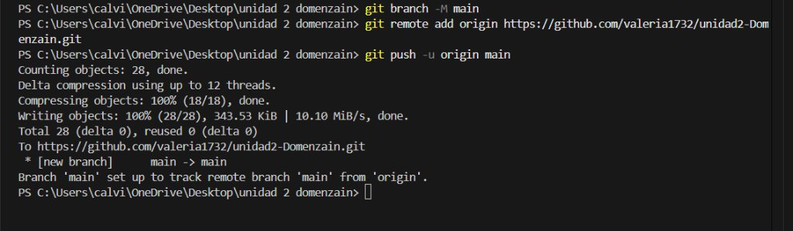
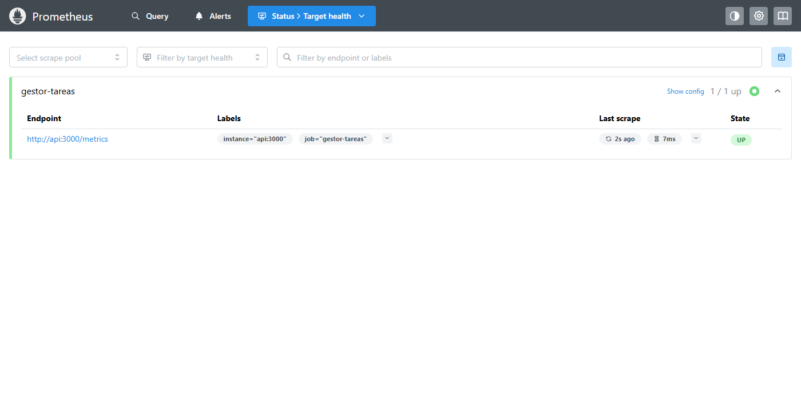
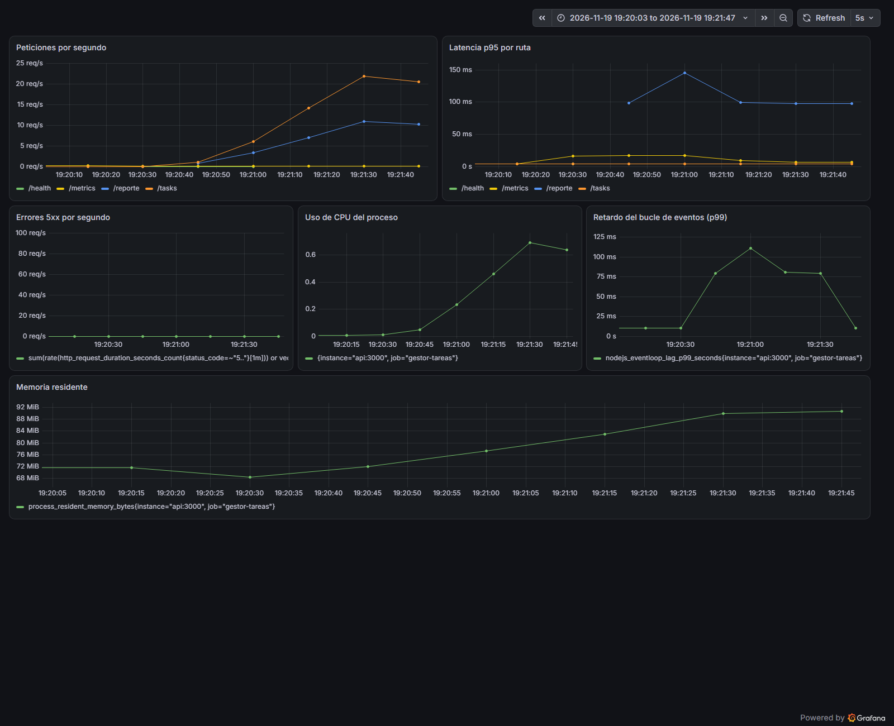
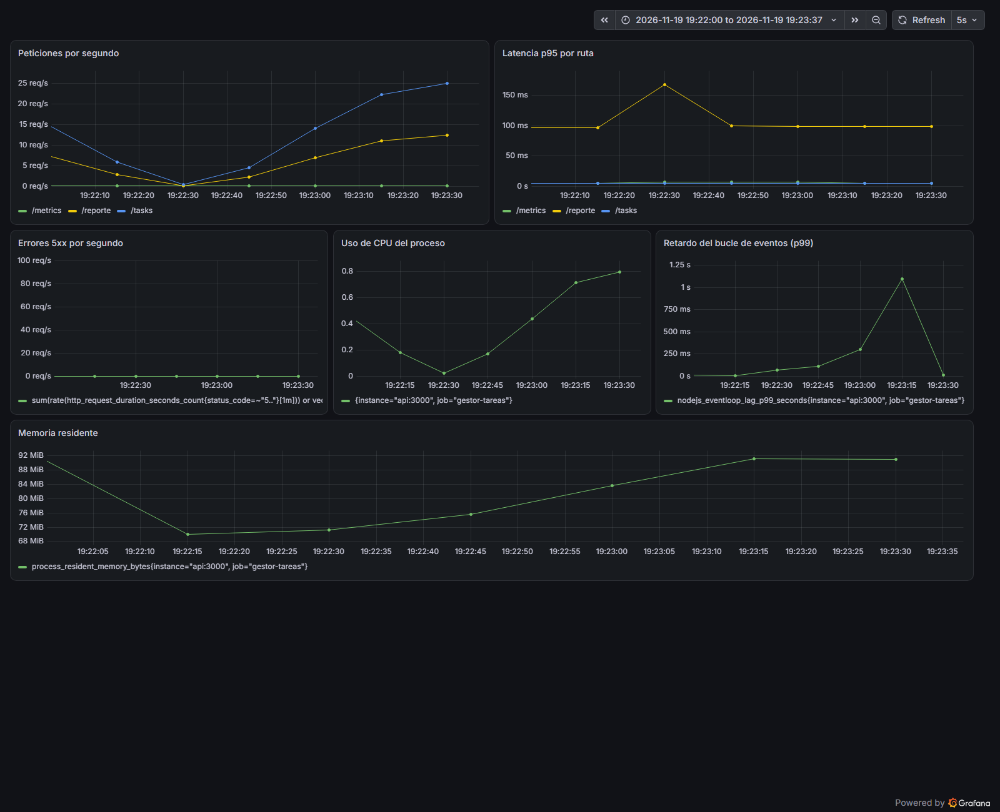
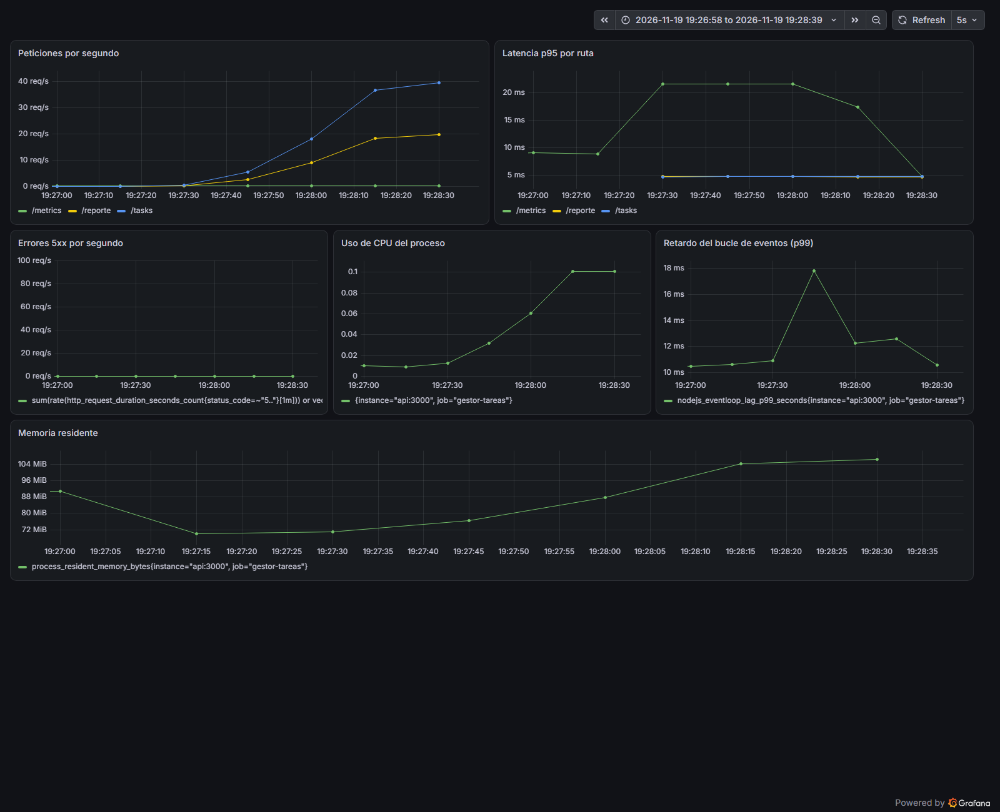

Unidad 2 · Desarrollo e integración continua
Proyecto: gestor-tareas-ci (API de tareas en Node.js/Express)
Repositorio: https://github.com/valeria1732/unidad2-Domenzain
Alumna: Valeria Calvillo
Fecha: 19 de noviembre de 2026
Realizar un ciclo completo de medir, mejorar y volver a medir: una API se prueba automáticamente con GitHub Actions, se ejecuta y se monitorea localmente con Prometheus y Grafana, se somete a carga con k6 y los resultados alimentan un plan de mejora con metas numéricas.
| Componente | Detalle |
|---|---|
| Sistema | Windows, Docker Desktop (motor Linux), Docker 29.7.2 |
| Aplicación | Node.js 22 (imagen node:22-alpine), Express 4, prom-client 15 |
| Pruebas | Jest 29 + Supertest 7 (umbral de cobertura de líneas 80 %) |
| Monitoreo | Prometheus (scrape cada 5 s) y Grafana, puertos 9090 y 3001 |
| Carga | k6 en contenedor, perfil carga de docker compose |
PS ...\unidad 2 domenzain> npm test PASS tests/tasks.test.js Salud y métricas √ GET /health responde ok (34 ms) √ GET /metrics expone métricas de Prometheus (10 ms) Tareas √ POST /tasks crea una tarea (12 ms) √ POST /tasks sin título devuelve 400 (3 ms) √ GET /tasks lista las tareas creadas (5 ms) √ PUT /tasks/:id/done marca la tarea como hecha (8 ms) √ PUT /tasks/:id/done con id inexistente devuelve 404 (2 ms) √ DELETE /tasks/:id elimina la tarea (5 ms) √ DELETE /tasks/:id con id inexistente devuelve 404 (5 ms) Reporte √ GET /reporte cuenta tareas totales, hechas y pendientes (8 ms) √ GET /reporte responde en menos de 50 ms (regresión de rendimiento) (3 ms) ----------|---------|----------|---------|---------|------------------- File | % Stmts | % Branch | % Funcs | % Lines | Uncovered Line #s ----------|---------|----------|---------|---------|------------------- All files | 100 | 83.33 | 100 | 100 | app.js | 100 | 83.33 | 100 | 100 | 20-40 ----------|---------|----------|---------|---------|------------------- Test Suites: 1 passed, 1 total Tests: 11 passed, 11 total Snapshots: 0 total Time: 1.045 s Ran all test suites.
Nota: la salida mostrada corresponde a la rama de mejora, con 11 pruebas (las 10 originales más la prueba de regresión de rendimiento de la Parte 5). En main el proyecto base tuvo 10 pruebas aprobadas con cobertura de líneas del 100 % (umbral ≥ 80 %).
PS ...\unidad 2 domenzain> docker compose ps NAME IMAGE COMMAND SERVICE CREATED STATUS PORTS unidad2domenzain-api-1 unidad2domenzain-api "docker-entrypoint.s…" api About a minute ago Up About a minute 0.0.0.0:3000->3000/tcp, [::]:3000->3000/tcp unidad2domenzain-grafana-1 grafana/grafana:latest "/run.sh" grafana 17 seconds ago Up 16 seconds 0.0.0.0:3001->3000/tcp, [::]:3001->3000/tcp unidad2domenzain-prometheus-1 prom/prometheus:latest "/bin/prometheus --c…" prometheus About a minute ago Up About a minute 0.0.0.0:9090->9090/tcp, [::]:9090->9090/tcp
$ curl http://localhost:3000/health
{"status":"ok"}
$ curl -X POST http://localhost:3000/tasks -H "Content-Type: application/json" -d '{"title":"Mi primera tarea"}'
{"id":1,"title":"Mi primera tarea","done":false}
$ curl http://localhost:3000/tasks
[{"id":1,"title":"Mi primera tarea","done":false}]
$ curl http://localhost:3000/metrics | head -n 20
# HELP process_cpu_user_seconds_total Total user CPU time spent in seconds.
# TYPE process_cpu_user_seconds_total counter
process_cpu_user_seconds_total 1.112096
# HELP process_cpu_system_seconds_total Total system CPU time spent in seconds.
# TYPE process_cpu_system_seconds_total counter
process_cpu_system_seconds_total 0.34278000000000003
# HELP process_cpu_seconds_total Total user and system CPU time spent in seconds.
# TYPE process_cpu_seconds_total counter
process_cpu_seconds_total 1.4548760000000003
# HELP process_start_time_seconds Start time of the process since unix epoch in seconds.
# TYPE process_start_time_seconds gauge
process_start_time_seconds 1795137448
# HELP process_resident_memory_bytes Resident memory size in bytes.
# TYPE process_resident_memory_bytes gauge
process_resident_memory_bytes 75038720El endpoint /health responde {"status":"ok"} y /metrics expone las métricas de Prometheus, entre ellas http_request_duration_seconds (definida en src/app.js) y las métricas por defecto del proceso.

git push -u origin main: la rama main quedó publicada en el repositorio.El flujo .github/workflows/ci.yml corre en cada push y pull_request hacia main. Tiene dos trabajos: pruebas (npm ci, Jest con cobertura, resumen en el panel de la ejecución y artefacto reportes-pruebas) e imagen-docker (construye la imagen y hace una prueba de humo; depende de pruebas con needs, por lo que se omite si las pruebas fallan).
| ID | Endpoint | Escenario | Resultado esperado | Resultado local (Jest) | Resultado en CI |
|---|---|---|---|---|---|
| CP-01 | GET /health | Consulta de salud | 200 y {"status":"ok"} | Pasó | (completar con Actions) |
| CP-02 | GET /metrics | Consulta de métricas | 200 y contiene http_request_duration_seconds | Pasó | |
| CP-03 | POST /tasks | Título válido | 201, id 1, done falso | Pasó | |
| CP-04 | POST /tasks | Sin título | 400 | Pasó | |
| CP-05 | GET /tasks | Con una tarea creada | Lista de 1 elemento | Pasó | |
| CP-06 | PUT /tasks/:id/done | Tarea existente | 200 y done verdadero | Pasó | |
| CP-07 | PUT /tasks/:id/done | Id inexistente | 404 | Pasó | |
| CP-08 | DELETE /tasks/:id | Tarea existente | 204 y lista vacía | Pasó | |
| CP-09 | DELETE /tasks/:id | Id inexistente | 404 | Pasó | |
| CP-10 | GET /reporte | 2 tareas, 1 hecha | total 2, hechas 1, pendientes 1 | Pasó | |
| CP-11 | GET /reporte | Regresión de rendimiento | Responde en < 50 ms | Falló (107 ms) → Pasó (3 ms) tras la mejora |
Las ejecuciones locales siguientes son reales. Las de GitHub Actions deben completarse con los datos de la pestaña Actions (fecha, duración y resultado) después de abrir los pull requests.
| N.º | Fecha | Rama / commit | Evento | Total | Pasaron | Fallaron | Cobertura | Resultado | Causa y acción |
|---|---|---|---|---|---|---|---|---|---|
| 1 | 19/11/2026 | main (local) | npm test | 10 | 10 | 0 | 100 % | Verde | Línea base del proyecto. |
| 2 | 19/11/2026 | mejora/reporte-rapido · 2e6ea93 (local) | npm test | 11 | 10 | 1 | 100 % | Rojo | CP-11: esperado < 50 ms, recibido 107.45 ms (línea 79 de tests/tasks.test.js). Causa: el ciclo heredado de 50 millones de iteraciones en calcularReporte. Acción: eliminar el ciclo. |
| 3 | 19/11/2026 | mejora/reporte-rapido · c7724de (local) | npm test | 11 | 11 | 0 | 100 % | Verde | Corrección aplicada; CP-11 responde en 3 ms. |
| 4–6 | (Actions) | push / pull_request | Completar con las ejecuciones de GitHub Actions. |
La prueba de regresión midió el tiempo de respuesta de /reporte y obtuvo 107.45 ms contra un límite de 50 ms, por lo que Jest marcó la aserción expect(ms).toBeLessThan(50) como fallida. La causa no estaba en la lógica del reporte, sino en el trabajo extra que hacía la función antes de contar las tareas. La acción fue quitar ese trabajo; después de eso la misma prueba pasó con 3 ms.
PS ...\unidad 2 domenzain> npm test
| Indicador | Objetivo | Dónde se mide |
|---|---|---|
| Latencia p95 global | < 500 ms | k6 y panel de latencia p95 |
| Tasa de errores | < 1 % | k6 y panel de errores 5xx |
| Retardo del bucle de eventos (p99) | < 100 ms | Panel de retardo del bucle de eventos |

| Panel | Consulta PromQL | Unidad |
|---|---|---|
| Peticiones por segundo | sum by (route) (rate(http_request_duration_seconds_count[1m])) | req/s |
| Latencia p95 por ruta | histogram_quantile(0.95, sum by (le, route) (rate(http_request_duration_seconds_bucket[1m]))) | s |
| Errores 5xx por segundo | sum(rate(http_request_duration_seconds_count{status_code=~"5.."}[1m])) or vector(0) | req/s |
| Uso de CPU del proceso | rate(process_cpu_seconds_total[1m]) | núcleos |
| Retardo del bucle de eventos (p99) | nodejs_eventloop_lag_p99_seconds | s |
| Memoria residente | process_resident_memory_bytes | bytes |
El tablero se creó mediante la API de Grafana a partir de scripts/dashboard.json, incluido en el repositorio.
Procedimiento. Siempre desde el mismo estado: API reiniciada, espera de 10 s y docker compose run --rm k6. Flujo por usuario: crear tarea, listar tareas y pedir el reporte, con 1 s de pausa.
PS ...\unidad 2 domenzain> docker compose run --rm k6 running (1m00.0s), 01/20 VUs, 628 complete and 0 interrupted iterations default [ 100% ] 01/20 VUs 1m00.0s/1m00.0s
Con 20 usuarios virtuales todos los umbrales de latencia de k6 se cumplieron (p95 global 75.92 ms), pero el retardo del bucle de eventos p99 ya alcanzó 116.7 ms, por encima del objetivo de 100 ms. Como el documento indica, cuando el p95 ya cumple el objetivo se sube el segundo tramo de 20 a 40 usuarios y se repite la medición. Cambio documentado: { duration: '30s', target: 20 } pasó a { duration: '30s', target: 40 } en k6/carga.js.

PS ...\unidad 2 domenzain> docker compose run --rm k6 running (1m00.0s), 03/40 VUs, 715 complete and 0 interrupted iterations default [ 100% ] 03/40 VUs 1m00.0s/1m00.0s

| Indicador | Objetivo | Valor medido (antes) | Fuente | ¿Cumple? |
|---|---|---|---|---|
| Latencia p95 global | < 500 ms | 776.01 ms | k6 | No |
| Latencia p95 de /reporte | < 500 ms | 506.27 ms | k6 | No |
| Latencia p95 de /tasks (listar) | < 500 ms | 648.17 ms | k6 | No |
| Tasa de errores | < 1 % | 0.00 % | k6 | Sí |
| Retardo del bucle de eventos p99 (pico) | < 100 ms | 1188 ms | Grafana / Prometheus | No |
| Uso de CPU del proceso (pico) | Cercano a 1 núcleo = saturación | 1.03 núcleos | Grafana / Prometheus | Saturada |
| Peticiones por segundo (pico) | Referencia | 50.8 req/s | Grafana / Prometheus | — |
Nota: los p95 de Grafana se calculan con histogram_quantile sobre los buckets del histograma de la API, por lo que se miden dentro del servidor; k6 mide desde el cliente e incluye la espera en cola.
/tasks (listar) con 648.17 ms y /reporte con 506.27 ms. Es llamativo que /tasks, que solo devuelve un arreglo, sea tan lenta: es una ruta afectada aunque no debería serlo. Con 20 usuarios /tasks tenía un p95 de solo 2.47 ms, mientras /reporte ya tenía 98.58 ms.src/app.js, la función calcularReporte recorre un ciclo de 50 000 000 de iteraciones (acumulado += i % 7) en cada petición, antes de contar las tareas. Ese ciclo es síncrono: bloquea el hilo único de Node.js, y el único dato que produce (valido) no depende de las tareas.Dos métricas que respaldan la causa: (1) el retardo del bucle de eventos de 1188 ms y (2) la CPU en 1.03 núcleos, además de la latencia en k6 que contagia a /tasks. Una observación adicional: en Prometheus el p95 de /tasks medido dentro del servidor es de apenas 4.8 ms, porque el tiempo que pasó esperando el bucle bloqueado ocurre antes de que el servidor empiece a cronometrar; de ahí la diferencia con los 648 ms de k6.
| ID | Hallazgo y evidencia (valor "antes") | Causa | Acción de mejora | Meta medible | Resultado (después) | Estado |
|---|---|---|---|---|---|---|
| M-01 | p95 de /reporte = 506.27 ms y de /tasks = 648.17 ms con 40 VUs (k6); retardo del bucle de eventos p99 = 1188 ms (Grafana) | Ciclo de 50 M de iteraciones síncrono en calcularReporte que bloquea el hilo único; CPU en 1.03 núcleos | Eliminar el ciclo; contar solo las tareas (versión 2) | p95 de /reporte < 500 ms (k6, 40 VUs), p95 global < 500 ms y retardo p99 < 100 ms (Grafana) | p95 /reporte = 4.2 ms; p95 global = 5.59 ms; retardo p99 = 17.8 ms | Cumplida |
| M-02 | El problema no se detectó en las pruebas funcionales: CP-10 pasó en verde aunque /reporte tardaba más de 100 ms | Ninguna prueba automática exigía un tiempo máximo de respuesta | Prueba de regresión de rendimiento (CP-11) que se ejecuta en cada CI | CP-11 falla con el código heredado (> 50 ms) y pasa tras la mejora (< 50 ms) | Rojo: 107.45 ms → Verde: 3 ms (local; confirmar en Actions) | Cumplida |
| M-03 | Con la API ya mejorada, la memoria residente sube de 71 MiB a 106 MiB durante la carga (Grafana) y k6 recibe 32 MB frente a 13 MB antes (1130 tareas acumuladas) | Las tareas viven en memoria sin límite y GET /tasks devuelve la lista completa, que crece con cada iteración | Propuesta (no implementada): paginar GET /tasks y limitar el tamaño de la lista | Memoria residente < 100 MiB y respuesta de /tasks < 100 KB con 40 VUs durante 1 minuto | No aplica: propuesta para el siguiente ciclo | Pendiente |
Se creó la rama mejora/reporte-rapido y se agregó la prueba CP-11. Con el código heredado falló, como se esperaba (ver bitácora, ejecución 2):
PS ...\unidad 2 domenzain> npm test
| Versión 1 (heredada) | Versión 2 (mejora) |
|---|---|
function calcularReporte() {
let acumulado = 0;
for (let i = 0; i < 50000000; i++) {
acumulado += i % 7;
}
const total = tareas.length;
const hechas = tareas.filter((t) => t.done).length;
return { total, hechas, pendientes: total - hechas,
valido: acumulado >= 0 };
} | function calcularReporte() {
const total = tareas.length;
const hechas = tareas.filter((t) => t.done).length;
return { total, hechas, pendientes: total - hechas };
} |
PS ...\unidad 2 domenzain> npm test PASS tests/tasks.test.js Salud y métricas √ GET /health responde ok (34 ms) √ GET /metrics expone métricas de Prometheus (10 ms) Tareas √ POST /tasks crea una tarea (12 ms) √ POST /tasks sin título devuelve 400 (3 ms) √ GET /tasks lista las tareas creadas (5 ms) √ PUT /tasks/:id/done marca la tarea como hecha (8 ms) √ PUT /tasks/:id/done con id inexistente devuelve 404 (2 ms) √ DELETE /tasks/:id elimina la tarea (5 ms) √ DELETE /tasks/:id con id inexistente devuelve 404 (5 ms) Reporte √ GET /reporte cuenta tareas totales, hechas y pendientes (8 ms) √ GET /reporte responde en menos de 50 ms (regresión de rendimiento) (3 ms) ----------|---------|----------|---------|---------|------------------- File | % Stmts | % Branch | % Funcs | % Lines | Uncovered Line #s ----------|---------|----------|---------|---------|------------------- All files | 100 | 83.33 | 100 | 100 | app.js | 100 | 83.33 | 100 | 100 | 20-40 ----------|---------|----------|---------|---------|------------------- Test Suites: 1 passed, 1 total Tests: 11 passed, 11 total Snapshots: 0 total Time: 1.045 s Ran all test suites.
PS ...\unidad 2 domenzain> docker compose run --rm k6 running (1m00.0s), 02/40 VUs, 1128 complete and 0 interrupted iterations default [ 100% ] 02/40 VUs 1m00.0s/1m00.0s

| Indicador | Objetivo | Antes | Después | Mejora | ¿Cumple ahora? |
|---|---|---|---|---|---|
| Latencia p95 global | < 500 ms | 776.01 ms | 5.59 ms | 99.3 % | Sí |
| Latencia p95 de /reporte | < 500 ms | 506.27 ms | 4.20 ms | 99.2 % | Sí |
| Latencia p95 de /tasks (listar) | < 500 ms | 648.17 ms | 6.09 ms | 99.1 % | Sí |
| Tasa de errores | < 1 % | 0.00 % | 0.00 % | — | Sí |
| Retardo del bucle de eventos p99 (pico) | < 100 ms | 1188 ms | 17.8 ms | 98.5 % | Sí |
| Uso de CPU del proceso (pico) | Referencia | 1.03 núcleos | 0.14 núcleos | 86.3 % | — |
| Peticiones por segundo (pico) | Referencia | 50.8 | 92.6 | +82 % | — |
Con la misma carga (40 usuarios virtuales), k6 completó 3390 peticiones frente a 2154 antes, sin cruzar ningún umbral. Las metas de M-01 y M-02 se cumplieron.
Observando el tablero con la API mejorada (gráfica "Memoria residente"), la memoria sube de unos 71 MiB a unos 106 MiB a lo largo de la prueba, y el volumen recibido por k6 aumentó de 13 MB a 32 MB. Cada usuario virtual crea una tarea en cada iteración y GET /tasks devuelve todas, por lo que la respuesta crece con el tiempo. Esto no es un problema a esta escala, pero con una lista creciente y sin límite acabaría afectando memoria y latencia. Por eso se registra como M-03, con una acción propuesta (paginación) y una meta numérica, sin implementarla.
El ejercicio mostró que medir antes de modificar evita corregir a ciegas. Con 20 usuarios virtuales la API parecía cumplir el objetivo de latencia, y fue al subir la carga a 40 cuando los datos revelaron el problema: la latencia de /tasks subía aunque esa ruta no hace trabajo pesado. La clave fue cruzar métricas distintas: el retardo del bucle de eventos (más de 1 s) y la CPU cerca de un núcleo explicaron por qué una ruta lenta afectaba a las demás en un entorno de un solo hilo.
La integración continua aportó la parte preventiva: la prueba de regresión de rendimiento falló con el código heredado y pasó con la mejora, de modo que el problema no puede volver sin que alguien lo note. Al volver a medir en las mismas condiciones, todas las metas se cumplieron y el siguiente cuello de botella (la memoria y el tamaño de la respuesta de /tasks) quedó registrado como M-03. Lo aprendido es que medir, mejorar y volver a medir es un ciclo continuo: cada mejora deja ver el siguiente hallazgo.
| Commit | Descripción |
|---|---|
| 84ff002 | feat: API de tareas con pruebas y Dockerfile |
| fbbcd2f | docs: reporte parcial con evidencia de pruebas |
| 128e4fa | perf: tablero Grafana, scripts de medición y carga a 40 VUs |
| 2e6ea93 | test: prueba de regresión de rendimiento para /reporte (rama mejora/reporte-rapido, en rojo) |
| 1aad6fe, c7724de | perf: elimina el ciclo innecesario de calcularReporte (en verde) |